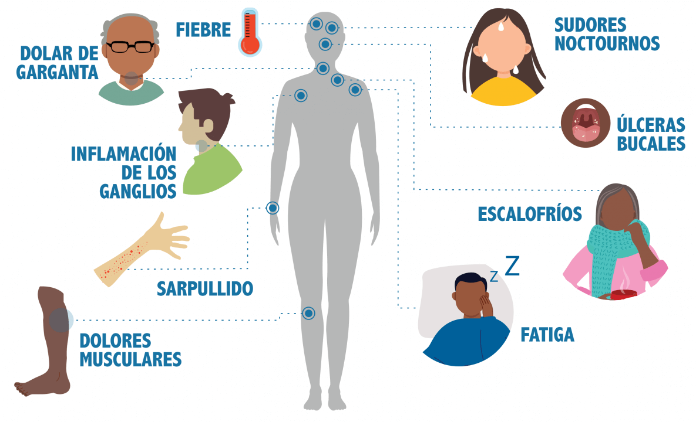

INFORMACIÓN BÁSICA SOBRE EL VIH
El virus de la inmunodeficiencia humana (VIH) es un virus que ataca el sistema inmunitario del cuerpo, especialmente las células llamadas linfocitos T CD4. El sistema inmunitario es la defensa del cuerpo contra las enfermedades y las infecciones. Cuando el VIH destruye o daña los linfocitos T CD4, el cuerpo se vuelve más vulnerable a otras infecciones y enfermedades.
Si una persona tiene el VIH y no recibe tratamiento, el virus puede dañar gradualmente el sistema inmunitario y llevar a la infección por el sida (síndrome de inmunodeficiencia adquirida). El sida es la etapa más avanzada de la infección por el VIH y se caracteriza por la presencia de ciertas enfermedades o infecciones que indican que el sistema inmunitario está gravemente dañado
ACERCA DEL VIH
¿Qué es el VIH?
El VIH (virus de la inmunodeficiencia humana) es un virus que ataca el sistema inmunitario del cuerpo. Si el VIH no se trata puede causar SIDA (síndrome de inmunodeficiencia adquirida).
No hay en la actualidad una cura eficaz. Una vez que se contrae el VIH, se lo tiene de por vida.
Sin embargo, con la atención médica adecuada, se puede controlar. Las personas con infección por el VIH que reciben el tratamiento eficaz pueden tener una vida larga y saludable, y proteger a sus parejas.
¿De donde provino el VIH
El origen del VIH (Virus de la Inmunodeficiencia Humana) es un tema de debate y aún no se conoce con certeza de dónde proviene. Sin embargo, hay varias teorías que intentan explicar cómo surgió el virus y cómo se extendió a nivel global
Una de las teorías más aceptadas es la del origen simiesco, según la cual el VIH se originó a partir de un virus similar al VIH que afecta a los simios, llamado virus de la inmunodeficiencia simiesca (SIV).
Según esta teoría, el VIH se transmitió del ser humano al simio a través de la caza y el consumo de carne de simio infectada, y luego se adaptó a la biología humana y se extendió entre la población humana.
Otra teoría sugiere que el VIH se originó a partir de virus similares a los que afectan a otros animales, como los virus de la inmunodeficiencia aviar (IAV) y los virus de la inmunodeficiencia felina (FIV). Esta teoría se basa en el hecho de que el VIH comp
¿Como sé si tengo el VIH
La única manera de saber si tiene el VIH es haciéndose la prueba. Saber si lo tiene lo ayuda a tomar decisiones saludables para que prevenga contraer o transmitir el VIH.
¿Hay síntomas?
La infección por el VIH (Virus de la Inmunodeficiencia Humana) a menudo no tiene síntomas durante los primeros meses después de la exposición al virus. Sin embargo, algunas personas pueden presentar una enfermedad aguda o infección por VIH, que es un síndrome de infección aguda que ocurre poco después de la infección por VIH.
Los sintomás de la enfermedad agudo o infección por VIH pueden incluir:
| N° | Sintomás: |
|---|---|
| 1 | Fiebre |
| 2 | Escalofríos |
| 3 | Dolor de cabeza |
| 4 | Fatiga |
| 5 | Dolor de garganta |
| 6 | Ganglios linfáticos inflamados |
| 7 | Dolor muscular y óseo |
| 8 | Erupción de la piel |
Los síntomas de la enfermedad aguda o infección por VIH suelen desaparecer por sí solos en unas pocas semanas, pero el virus sigue presente en el cuerpo y puede dañar el sistema inmunitario a largo plazo.
A medida que el sistema inmunitario se debilita, las personas infectadas por el VIH pueden desarrollar otras enfermedades y afecciones, como neumonía, infecciones oportunistas, tuberculosis y ciertos tipos de cánceres. Estas enfermedades y afecciones pueden tardar mucho tiempo en aparecer y pueden ser graves.

¿Cuáles son las fases del VIH
Las fases de la infección por el VIH (Virus de la Inmunodeficiencia Humana) se dividen en tres etapas: la etapa aguda, la etapa de latencia y la etapa de SIDA
FASE 1
| INFECCIÓN AGUDA
Etapa aguda: La etapa aguda del VIH es el período de tiempo que ocurre inmediatamente después de la infección. Durante esta etapa, el virus se multiplica rápidamente en el cuerpo y puede causar síntomas como fiebre, dolor de cabeza, dolor de garganta y ganglios linfáticos inflamados. Los síntomas suelen desaparecer por sí solos en unas pocas semanas, pero el virus sigue presente en el cuerpo.
FASE 2
| INFECCIÓN CRÓNICA POR EL VIH
Etapa de latencia: La etapa de latencia del VIH es el período de tiempo en el que el virus está presente en el cuerpo, pero no causa síntomas visibles y el sistema inmunitario todavía puede controlarlo. Esta etapa puede durar muchos años y, durante este tiempo, las personas infectadas por el VIH pueden sentirse bien y tener una vida normal. Sin embargo, el virus sigue dañando lentamente el sistema inmunitario.
FASE 3
| SINDROME DE INMUNODEFICIENCIA ADQUIRIDA (SIDA)
Etapa de SIDA: La etapa de SIDA (Síndrome de Inmunodeficiencia Adquirida) es la etapa más avanzada de la infección por el VIH y se caracteriza por la aparición de enfermedades y afecciones graves debido a que el sistema inmunitario se ha debilitado demasiado. Algunas de estas enfermedades y afecciones pueden incluir neumonía, infecciones oportunistas, tuberculosis y ciertos tipos de cánceres. Sin tratamiento, la persona puede morir debido a estas complicaciones.
TRANSMICIÓN DEL VIH
¿Cómo se pasa el VIH de una persona a otra?: El VIH se pasa de una persona a otra a través de ciertos fluidos corporales que contienen el virus. Estos fluidos incluyen la sangre, el semen, el fluido vaginal, el fluido anal y la leche materna. Algunas de las formas más comunes en las que el VIH se puede transmitir de una persona a otra son:
- Relaciones sexuales sin protección: El VIH se puede transmitir durante el sexo anal, vaginal o oral sin protección, ya que estas actividades pueden permitir que el virus entre en contacto con los fluidos corporales de una persona y los de otra.
- Compartir agujas y jeringas: El VIH se puede transmitir al compartir agujas y jeringas contaminadas con sangre infectada.
- Transmisión de madre a hijo: Las mujeres con VIH pueden transmitir el virus a sus hijos durante el embarazo, el parto o la lactancia.
Es importante destacar que el VIH no se puede transmitir a través del aire, del agua o por el contacto casual, como el beso o el apretón de manos. Además, el uso de condones y otros métodos anticonceptivos durante las relaciones sexuales y el no compartir agujas y jeringas son medidas efectivas para prevenir la transmisión del VIH.
¿Puedo contraer el VIH a través de las relaciones sexuales anales?
Es posible contraer el VIH a través de las relaciones sexuales anales. Durante el sexo anal, el virus del VIH puede entrar en contacto con las membranas mucosas del recto y el colon, lo que puede facilitar la transmisión del virus de una persona a otra. Además, el recto y el colon pueden estar más expuestos a lesiones durante el sexo anal, lo que puede aumentar el riesgo de transmisión del VIH. Es importante utilizar condones u otro tipo de protección durante el sexo anal para reducir el riesgo de contraer el VIH y otras infecciones de transmisión sexual. Es importante destacar que el VIH se puede transmitir a través de cualquier tipo de sexo sin protección.
- Las relaciones sexuales anales son el tipo de actividad sexual de mayor riesgo para contraer o transmitir el VIH.
- Ser el integrante receptivo de la pareja (bottom) es más riesgoso que ser el insertivo (top).
- Su riesgo de contraer el VIH es muy alto porque la mucosa que recubre el recto es delgada y puede permitir la entrada del VIH al cuerpo durante las relaciones sexuales anales.
- El insertivo también tiene riesgo porque el VIH puede entrar al cuerpo por el orificio que se encuentra en la punta del pene (uretra), por el prepucio (si el pene no está circuncidado) o por pequeños cortes, rasguños o llagas abiertas en cualquier parte del pene.
¿Puedo contraer el VIH a través de las relaciones sexuales vaginales?
es posible contraer el VIH a través de las relaciones sexuales vaginales. Durante el sexo vaginal, el virus del VIH puede entrar en contacto con las membranas mucosas de la vagina y el cuello uterino, lo que puede facilitar la transmisión del virus de una persona a otra. Además, la vagina y el cuello uterino pueden estar más expuestos a lesiones durante el sexo vaginal, lo que puede aumentar el riesgo de transmisión del VIH. Es importante utilizar condones u otro tipo de protección durante el sexo vaginal para reducir el riesgo de contraer el VIH y otras infecciones de transmisión sexual. Es importante destacar que el VIH se puede transmitir a través de cualquier tipo de sexo sin protección.
¿El VIH se puede transmitir de madre a bebé?
El VIH se puede transmitir de madre a bebé durante el embarazo, el parto o la lactancia. Sin tratamiento, el riesgo de transmisión del VIH de una madre infectada a su bebé durante el embarazo es del 15% al 45%. Sin embargo, el tratamiento antirretroviral durante el embarazo y el parto puede reducir el riesgo de transmisión del VIH a menos del 2%.
Además, las mujeres con VIH deben evitar amamantar a sus bebés ya que el VIH se puede transmitir a través de la leche materna. En su lugar, deben utilizar leche de fórmula.
Es importante que las mujeres embarazadas se sometan a pruebas de detección del VIH y, si tienen el virus, reciban tratamiento antirretroviral para reducir el riesgo de transmisión a su bebé.
¿Cuáles son algunas de las formas poco comunes en que se ha transmitido el VIH?
- Transfusiones de sangre: El VIH se ha transmitido a través de transfusiones de sangre infectada en algunos casos. Esto es poco común hoy en día debido a las pruebas de detección del VIH que se realizan en las unidades de sangre
- Transmisión por mordeduras: Se ha reportado el VIH en algunos casos de transmisión a través de mordeduras humanas. Esto es poco común y requiere que la mordedura sea grave y que se produzca sangrado.
- Transmisión por tatuajes o piercing: El VIH se ha transmitido a través de tatuajes o piercing con agujas contaminadas en algunos casos. Esto se puede evitar utilizando equipo de protección estéril y seguir las prácticas de esterilización adecuadas.
- Transmisión por agujas de tatuaje: Se han reportado casos de transmisión del VIH a través de agujas de tatuaje contaminadas en algunos casos. Esto se puede evitar utilizando equipo de protección estéril y seguir las prácticas de esterilización adecuadas.
- Transmisión por el uso compartido de instrumentos médicos contaminados: Se ha reportado el VIH en algunos casos de transmisión a través del uso compartido de instrumentos médicos contaminados, como sierras de mano, cuchillas quirúrgicas y otros instrumentos invasivos. Esto es poco común y se puede evitar siguiendo prácticas de esterilización adecuadas y utilizando equipo de protección estéril.
¿Qué líquidos corporales transmiten el VIH?
Los líquidos corporales que pueden transmitir el VIH son:
- Sangre
- Leche materna
- Fluido seminal
- Fluido
Para que ocurra la transmisión, estos líquidos deben entrar en contacto con una membrana mucosa o un tejido lesionado o inyectarse directamente en el torrente sanguíneo (por una aguja o jeringa). Las membranas mucosas se encuentran dentro del recto, la vagina, el pene y la boca.
FORMAS EN QUE NO SE TRANSMITE EL VIH
¿Qué tan bien sobrevive el VIH fuera del cuerpo?
El VIH no sobrevive por mucho tiempo fuera del cuerpo humano. El virus necesita entrar a las células del sistema inmune de una persona para reproducirse y sobrevivir, y no puede sobrevivir por mucho tiempo en el ambiente exterior. El VIH se destruye rápidamente cuando se expone al aire, la luz solar directa y la calor, y también se puede destruir mediante el uso de productos químicos como el hipoclorito de sodio (lejía) y otros desinfectantes.
- Exposición al aire
- Exposición a la luz solar directa
- Exposición a la calor
- Uso de productos químicos
FACTORES QUE AUMENTAN EL RIESGO DE CONTRAER EL VIH
¿Qué puede aumentar el riesgo de contraer o transmitir el VIH?
Mientras más alta sea la carga viral de una persona, mayores serán sus probabilidades de transmitir el VIH.
- La carga viral es la cantidad de VIH que las personas infectadas tienen en la sangre.
- La carga viral es mayor durante la fase aguda de infección por el VIH, y sin el tratamiento para el VIH.
- Tomar los medicamentos para el VIH puede hacer que la carga viral llegue a niveles muy bajos, tan bajos que las pruebas no la pueden detectar (lo cual se llama tener una carga viral indetectable).
- Las personas con el VIH que mantienen una carga viral indetectable (o mantienen la supresión viral) pueden vivir muchos años y de manera saludable. Tener una carga viral indetectable también ayuda a prevenir la transmisión del virus a otras personas a través de las relaciones sexuales o al compartir agujas, jeringas u otros implementos para la inyección de drogas, o de madre a hijo durante el embarazo, el parto y el amamantamiento.
Otras enfermedades de transmisión sexual
Si tiene otra enfermedad de transmisión sexual (ETS), las probabilidades de que contraiga o transmita el VIH pueden ser mayores.
- Hacerse las pruebas y recibir tratamiento para las enfermedades de transmisión sexual que tenga puede reducir sus probabilidades de contraer o transmitir el VIH y otras ETS.
- Si usted tiene el VIH y mantiene una carga viral indetectable, contraer una ETS no parece aumentar el riesgo de transmitir el VIH. Pero las ETS pueden causar otros problemas.
- Usar condones puede reducir sus probabilidades de contraer o transmitir las ETS que pueden transmitirse a través de los líquidos genitales, como la gonorrea, la clamidia y el VIH.
El consumo de drogas y el alcohol.
- Estar ebrio o drogado afecta la capacidad de las personas para tomar decisiones seguras.
- Si usted bebe alcohol, especialmente en atracón, o consume “drogas de diseño”, esto puede afectar su juicio, reducir sus inhibiciones y perjudicar las decisiones que tome sobre las relaciones sexuales o el consumo de drogas.
- Hace que sea más probable que tenga relaciones sexuales no planificadas, le cueste más usar condones de la manera correcta en cada relación sexual, tenga más parejas sexuales o consuma otras drogas.
Si va a una fiesta u otro lugar donde sabe que va a beber o consumir drogas, puede llevar un condón para que pueda reducir su riesgo de contraer o transmitir el VIH en caso de que tenga relaciones sexuales vaginales o anales. Hay consejería, medicamentos y otros métodos disponibles para ayudarlo a dejar de consumir alcohol o drogas, o reducir la cantidad que consume. Hable con un consejero, médico u otro proveedor de atención médica sobre las opciones que podrían ser adecuadas para usted.
EL VIH Y EL CONSUMO DE SUSTANCIAS
Los trastornos de consumo de sustancias, que son patrones problemáticos de consumo de alcohol u otras sustancias —como cocaína crack, metanfetaminas (“meth”), nitrito de amilo (“poppers”), opioides recetados y heroína—, están estrechamente asociados al VIH y a otras enfermedades de transmisión sexual.
El consumo de drogas inyectables, puede ser una vía de transmisión directa del VIH si se comparten agujas, jeringas u otros implementos de inyección contaminados con el VIH. Sin embargo, beber alcohol e ingerir, fumar o inhalar drogas está asociado, también, a un mayor riesgo de contraer o transmitir el VIH. Estas sustancias alteran el juicio de las personas; esto puede llevarlas a tener comportamientos sexuales riesgosos (p. ej., tener relaciones sexuales sin condón o tener múltiples parejas sexuales), y estos comportamientos pueden aumentar sus probabilidades de contraer o transmitir el VIH. En las personas que tienen el VIH, el consumo de sustancias puede acelerar la evolución de la enfermedad, afectar la adherencia a la terapia antirretroviral (medicamentos para el VIH) y empeorar las consecuencias del VIH en general.
Las sustancias comúnmente consumidas y el riesgo de infección por el VIH
El consumo de alcohol en exceso, especialmente en atracón, puede ser un factor de riesgo importante porque se vincula a comportamientos sexuales riesgosos y, entre las personas con VIH, puede perjudicar el resultado del tratamiento.
Los opioides, una clase de droga que reduce el dolor, incluyen tanto a los medicamentos recetados como a la heroína. Se asocian a comportamientos de riesgo de transmisión del VIH, como compartir agujas estando infectado y tener relaciones sexuales riesgosas, y se han vinculado a un reciente brote de VIH.
El “meth” ha sido vinculado a comportamientos sexuales riesgosos que ponen a las personas en mayor riesgo de infección por el VIH. Puede ser inyectado, lo cual también aumenta el riesgo de transmisión del VIH si se comparten las agujas y los otros implementos de inyección.

La cocaína crack es un estimulante que puede crear un ciclo de agotamiento rápido de recursos y búsqueda de otras formas de conseguir la droga, lo cual incluye intercambiar sexo por drogas o dinero, lo que, a su vez, incrementa el riesgo de infección por el VIH.
El consumo de nitrito de amilo (“poppers”) ha sido asociado por mucho tiempo a comportamientos sexuales riesgosos, al consumo de drogas ilegales y a enfermedades de transmisión sexual entre los hombres gais y bisexuales.
PREVENCIÓN DEL VIH
Existen ahora más herramientas que nunca para prevenir el VIH. Puede usar estrategias, como la abstinencia (no tener relaciones sexuales), no compartir agujas nunca y usar condones de la manera correcta cada vez que tenga relaciones sexuales. También es posible que pueda aprovechar los medicamentos de prevención del VIH, como profilaxis prexposición (PrEP) y profilaxis posexposición (PEP). Si tiene el VIH, hay muchas medidas que puede tomar para prevenir transmitirlo a otras personas.
Protegerse durante las relaciones sexuales
- Usa preservativos de látex: los preservativos son una forma efectiva de protegerse durante el contacto sexual. Los preservativos de látex son los más comunes y son efectivos para prevenir la transmisión del VIH y otras ETS
- Utiliza lubricantes: el uso de lubricantes durante las relaciones sexuales puede ayudar a evitar el riesgo de rotura del preservativo y reducir el riesgo de infecciones.
- Habla con tu pareja sobre su estado de salud: es importante hablar con tu pareja sobre su estado de salud y preguntarle si ha sido testeado para el VIH y otras ETS.
- Usa barreras físicas: las barreras físicas, como las cortinas dental y los condones femeninos, pueden ayudar a protegerse durante las relaciones sexuales orales y vaginales.
- Limita el número de parejas sexuales: cuantas más parejas sexuales tengas, mayor será el riesgo de contraer una ETS o el VIH. Trata de limitar el número de parejas sexuales para reducir el riesgo.
- Usa métodos anticonceptivos: los métodos anticonceptivos, como las píldoras anticonceptivas y los dispositivos intrauterinos (DIUs), pueden ayudar a prevenir el embarazo, pero no protegen contra el VIH y otras ETS. Es importante utilizar métodos anticonceptivos junto con métodos de protección contra el VIH y otras ETS.
- Considera la PrEP: la PrEP (profilaxis preexposición) es un medicamento que se toma de manera regular para reducir el riesgo de contraer el VIH. Es efectivo para personas que están en alto riesgo de contraer el VIH, como personas que tienen relaciones sexuales sin protección con personas que viven con el VIH.

Si tengo el VIH, ¿cuál es la mejor manera de proteger a los demás?
- Obtenga atención médica y tome medicamentos para tratar el VIH.
- Los medicamentos para el VIH (llamados terapia antirretroviral o TAR) pueden reducir la cantidad de virus que tiene en la sangre (a la cual se la llama carga viral). Los medicamentos para el VIH pueden hacer que la carga viral llegue a niveles muy bajos, tan bajos que las pruebas no la pueden detectar (lo cual se llama tener una carga viral indetectable).
- Las personas con el VIH que mantienen una carga viral indetectable (o mantienen la supresión viral) pueden vivir muchos años y de manera saludable. La supresión viral se define como tener menos de 200 copias de VIH por mililitro de sangre.
- Si una persona tiene una carga viral indetectable, no transmitirá el VIH a su pareja durante las relaciones sexuales.
- Tener una carga viral indetectable también previene la transmisión a otras personas a través del uso compartido de agujas, jeringas u otros implementos para la inyección de drogas, o de madre a hijo durante el embarazo, el parto y al amamantar.
- La mayoría de las personas logran tener el virus bajo control dentro de un plazo de seis meses.
- Tomar los medicamentos de la terapia antirretroviral no previene la transmisión de otras enfermedades de transmisión sexual (ETS).
PRUEBA DEL VIH
La prueba del VIH es un examen que se utiliza para determinar si una persona tiene el virus de la inmunodeficiencia humana (VIH). El VIH es un virus que ataca el sistema inmunitario y puede llevar a la enfermedad de inmunodeficiencia adquirida (SIDA) si no se trata.
-
Pruebas de sangre
Las pruebas de sangre se realizan en un laboratorio y pueden detectar el VIH aproximadamente una semana después de la infección. Hay dos tipos principales de pruebas de sangre: pruebas de anticuerpos y pruebas de carga viral. Las pruebas de anticuerpos detectan anticuerpos que produce el cuerpo para combatir el VIH. Las pruebas de carga viral miden la cantidad de VIH en la sangre.
-
Pruebas de saliva
Las pruebas de saliva se realizan en el hogar o en una clínica y pueden detectar el VIH aproximadamente un mes después de la infección.
-
Pruebas rápidas:
Las pruebas rápidas se realizan en el hogar o en una clínica y pueden detectar el VIH aproximadamente un mes después de la infección. Las pruebas rápidas utilizan una muestra de sangre, saliva o plasma para detectar el VIH.
-
Pruebas de PCR:
Las pruebas de PCR (reacción en cadena de la polimerasa) se realizan en un laboratorio.
El período de ventana del VIH es el tiempo transcurrido entre la infección por el VIH y la aparición de anticuerpos contra el virus en la sangre. Esto significa que durante este período, una persona puede estar infectada con el VIH pero una prueba de detección de anticuerpos del VIH daría un resultado negativo. El período de ventana del VIH puede durar de 2 a 12 semanas, pero en promedio dura alrededor de 4 semanas. Es importante tener en cuenta que durante este período, la persona infectada con el VIH puede transmitir el virus a otras personas. Por lo tanto, es importante practicar medidas de prevención del VIH, como el uso de condones, durante todas las relaciones sexuales.
Autopruebas del VIH
Existen varias opciones de autopruebas de VIH disponibles en el mercado. Algunas de ellas son pruebas de orina, pruebas de saliva y pruebas de sangre. Las pruebas de saliva y orina suelen ser las más fáciles de usar, ya que solo requieren una muestra de saliva o orina y no necesitan un profesional de la salud para su aplicación. Las pruebas de sangre, por otro lado, requieren una muestra de sangre y deben ser administradas por un profesional de la salud.
Para hacerte una autoprueba de VIH, primero debes seleccionar el tipo de prueba que deseas utilizar y luego seguir las instrucciones del kit de prueba. Las pruebas de saliva y orina suelen ser muy fáciles de usar y generalmente incluyen instrucciones detalladas y fáciles de seguir. Si decides utilizar una prueba de sangre, puedes obtenerla en una clínica de salud o en una farmacia. Asegúrate de seguir cuidadosamente las instrucciones del profesional de la salud al realizarte la prueba.
Es importante tener en cuenta que las autopruebas de VIH no son tan precisas como las pruebas realizadas en un laboratorio y pueden dar resultados falsos negativos o falsos positivos. Por lo tanto, es importante confirmar cualquier resultado positivo con una prueba de laboratorio. Si te haces una autoprueba de VIH y obtienes un resultado positivo, debes acudir a un profesional de la salud para realizar una prueba de laboratorio y obtener un diagnóstico definitivo.
VIVIR CON EL VIH
Vivir con el VIH (virus de inmunodeficiencia humana) puede ser un desafío, ya que la enfermedad puede afectar de diversas maneras la salud física y mental de una persona. Sin embargo, gracias a los avances en el tratamiento, muchas personas con VIH pueden llevar vidas plenas y productivas.
Cuando una persona se infecta con el VIH, puede pasar varios años antes de que los síntomas aparezcan. Sin embargo, cuando los síntomas aparecen, pueden incluir fiebre, fatiga, sudores nocturnos, pérdida de peso y llagas en la boca o el recto. A medida que la enfermedad avanza, el sistema inmunológico se debilita, lo que aumenta el riesgo de infecciones oportunistas, como las neumonías y las infecciones por levaduras.
El tratamiento del VIH se basa en el uso de medicamentos antirretrovirales (ARV), que pueden detener la replicación del virus y ayudar a fortalecer el sistema inmunológico. Los ARV no curan el VIH, pero permiten que las personas infectadas vivan con la enfermedad por años, y reducen significativamente el riesgo de transmisión del virus a otras personas.
La medicación y los cuidados médicos regulares son esenciales para controlar el VIH y prevenir complicaciones. Los pacientes también deben ser informados de la importancia de llevar un estilo de vida saludable y tomar medidas para prevenir otras infecciones, como vacunarse contra la neumonía o evitar compartir agujas.
Además, vivir con VIH puede tener un impacto significativo en la salud mental, algunas personas pueden sentir estrés, ansiedad, depresión, aislamiento, discriminación. Es importante contar con un equipo de apoyo, ya sea amigos, familiares, trabajadores de la salud, grupos de apoyo, etc. que les puedan ayudar a afrontar esos desafíos.
¿Qué significa un diagnóstico de infección por el VIH?
Un diagnóstico de infección por el VIH significa que una persona ha sido infectada con el virus de inmunodeficiencia humana (VIH) y que su sistema inmunológico está siendo dañado. El VIH es el virus que causa el sida (síndrome de inmunodeficiencia adquirida).
Un diagnóstico de infección por el VIH puede ser un golpe duro para la persona, pero es importante recordar que el tratamiento del VIH ha avanzado significativamente en las últimas décadas y hay muchas opciones disponibles para controlar la enfermedad y prevenir complicaciones. Los medicamentos antirretrovirales (ARV) son el tratamiento principal para el VIH. Estos medicamentos pueden detener la replicación del virus y fortalecer el sistema inmunológico, permitiendo que las personas infectadas vivan con la enfermedad por años y reducir significativamente el riesgo de transmisión del virus a otras personas.
Además, es importante que las personas con VIH reciban atención médica regular para controlar la enfermedad, prevenir complicaciones y garantizar una buena calidad de vida. También es importante buscar apoyo emocional y considerar los aspectos legales y sociales que pueden surgir después del diagnóstico.
En general, recibir un diagnóstico de infección por el VIH puede ser un momento difícil, pero con un buen tratamiento y apoyo, las personas infectadas pueden llevar vidas plenas y productivas.
¿Qué debo hacer si me acaban de diagnosticar la infección por el VIH?
Puede ser difícil de asimilar, pero quiero asegurarte que el tratamiento para el VIH ha avanzado mucho en los últimos años y hay muchas opciones disponibles para controlar la enfermedad y prevenir complicaciones. Los medicamentos antirretrovirales (ARV) son el tratamiento principal para el VIH. Estos medicamentos pueden detener la replicación del virus y fortalecer el sistema inmunológico. Con estos medicamentos, las personas infectadas pueden vivir con la enfermedad por años y reducir significativamente el riesgo de transmisión del virus a otras personas.
Es importante que comiences a recibir atención médica regular para controlar la enfermedad, prevenir complicaciones y garantizar una buena calidad de vida. Quiero que sepas que estaré aquí para apoyarte en cada paso del camino. También es importante que busques apoyo emocional, hay grupos de apoyo, psicólogos, psiquiatras, entre otros profesionales que te pueden ayudar a afrontar esta situación.
En resumen, recibir un diagnóstico de infección por el VIH puede ser un momento difícil, pero con un buen tratamiento y apoyo, las personas infectadas pueden llevar vidas plenas y productivas. Estaremos juntos en este proceso.
Tome los medicamentos para el VIH según las indicaciones
- Esto lo ayudará a mantener baja su carga viral y alto su recuento de células CD4.
- Tome los medicamentos exactamente como se lo diga su proveedor de atención médica: a determinadas horas del día, con o sin ciertos tipos de alimento.
- Lleve un registro de sus medicamentos y régimen horario.
- Hable con su proveedor de atención médica o farmacéutico si tiene alguna pregunta sobre cuándo o cómo tomar sus medicamentos o si tiene algún efecto secundario.
Mantenga sus citas médicas
- Use un calendario para marcar los días en que tiene una cita médica.
- Programe recordatorios en su teléfono.
- Descargue una app en su teléfono que pueda ayudarlo a recordar las citas médicas.
- Guarde la tarjeta con la fecha de su próxima cita en un lugar donde la vaya a ver.
- Pídale a un familiar o amigo que lo ayude a recordar la cita.
Hable con sinceridad con su proveedor de atención médica
- Su proveedor de atención médica necesita tener la información más precisa posible para manejar su atención médica y tratamiento.
- Anote las dudas sobre las cuales quiera hablar con su proveedor de atención médica. Esté preparado para anotar las respuestas.
- Lleve un registro de sus resultados de laboratorio, visitas médicas y planes de cuidados y tratamiento.
- Asegúrese de que sus proveedores de atención médica tengan su información de contacto correcta.
¿Qué puedo esperar durante la visita médica?
Durante la visita médica, el proveedor de atención médica podría hacerle preguntas o exámenes médicos de rutina para ver cómo el VIH está afectando su cuerpo.
Además, podría:
- Tomarle una muestra de sangre para revisar su carga viral.
- Hacerle preguntas sobre sus antecedentes médicos.
- Revisar si tiene otros tipos de infección a problemas de salud. Algunos problemas de salud podrían debilitar su cuerpo, empeorar la infección por el VIH o impedir que el tratamiento funcione.
- Ponerle vacunas si las necesita.
- Hablarle sobre los medicamentos para el VIH, recetárselos y monitorearlos.
- Conversar con usted sobre lo que puede ayudarlo a seguir su plan de tratamiento para el VIH.
- Ayudarlo a identificar otros tipos de apoyo que podría necesitar.
- Preguntarle sobre sus parejas sexuales o compañeros de inyección de drogas y conversar con usted sobre las formas de protegerlos para que no contraigan el VIH.
¿Cuáles son las diferentes pruebas que ayudan a monitorear mi infección por el VIH?
Recuento de CD4
- El recuento de CD4 es la cantidad de células CD4 que tiene en la sangre. Las células CD4 ayudan al cuerpo a luchar contra las infecciones.
- El VIH ataca las células CD4 y reduce la cantidad que hay en la sangre. Esto hace que le sea difícil al cuerpo luchar contra las infecciones.
- Su proveedor de atención médica revisará su recuento de células CD4 cada 3-6 meses.
Prueba de carga viral
- La carga viral es la cantidad de VIH que hay en la sangre.
- Su proveedor de atención médica le hará una prueba de carga viral para determinar la cantidad de virus que tiene en la sangre.
- Cuando la carga viral es alta, hay más VIH en el cuerpo. Esto significa que su sistema inmunitario no está luchando contra el VIH muy bien.
-
Debería hacerse una prueba de carga viral:
- Cada 4-6 meses
- Antes de tomar un nuevo medicamento para el VIH, y
- Aproximadamente entre 2 y 8 semanas después de comenzar o cambiar un medicamento.
¿Qué es el tratamiento para el VIH?
El tratamiento para el VIH es una combinación de medicamentos antirretrovirales (ART) que se utilizan para reducir la cantidad de virus en el cuerpo (conocido como "carga viral") y prevenir el daño a las defensas del cuerpo. El objetivo del tratamiento es reducir la cantidad del virus en el cuerpo al nivel indetectable, eso significa que los medicamentos son tan efectivos que no se puede detectar el virus en la sangre con pruebas normales, por lo que no se puede transmitir el virus a otras personas.
¿Cuándo debo comenzar el tratamiento?
En general, se recomienda comenzar el tratamiento tan pronto como sea posible después del diagnóstico del VIH. Esto se debe a que cuanto antes se inicie el tratamiento, mejor será el pronóstico a largo plazo para la salud del individuo. Además, al iniciar el tratamiento temprano, se puede reducir significativamente la carga viral en el cuerpo, lo que ayuda a prevenir la progresión del VIH a la infección avanzada, también conocida como SIDA.
La OMS y otras agencias recomiendan comenzar el tratamiento en el momento del diagnóstico independientemente del estado del sistema inmunológico, esto ha sido cambiado a nivel mundial desde el año 2019. Sin embargo, los individuos con una carga viral extremadamente alta o un sistema inmunológico debilitado (medido por el conteo de linfocitos CD4) podrían comenzar el tratamiento antes.
Es importante recordar que el tratamiento del VIH es un proceso continuo y es importante seguir viendo a un médico especialista en VIH para monitorear su respuesta al tratamiento y detectar cualquier problema de salud relacionado.
¿Qué pasa si demoro el tratamiento?
Si se demora el tratamiento del VIH, la infección puede avanzar y convertirse en SIDA (síndrome de inmunodeficiencia adquirida). El SIDA es la etapa avanzada de la infección por VIH, en la que el sistema inmunológico está gravemente dañado y el cuerpo es propenso a una serie de infecciones oportunistas y cánceres. Sin tratamiento, el VIH también puede dañar el sistema nervioso, los riñones, el hígado y otros órganos. Además, si se tiene el VIH y no se trata, se tiene mayor riesgo de transmitir el virus a otras personas. Es importante buscar tratamiento tan pronto como sea posible después de haber sido infectado con el VIH.
¿Cuáles son los beneficios de tomar los medicamentos para el VIH todos los días, según las indicaciones?
El tratamiento para el VIH reduce la cantidad de VIH en la sangre (carga viral).
- Tomar los medicamentos según las indicaciones ayudará a mantener baja su carga viral.
- El tratamiento para el VIH puede hacer que la carga viral sea bien baja (supresión viral). Tener supresión viral significa tener menos de 200 copias de VIH por mililitro de sangre.
- El tratamiento para el VIH puede reducir la carga viral a niveles tan bajos que las pruebas no la pueden detectar (carga viral indetectable).
- Si se reduce después de comenzar el tratamiento para el VIH, eso significa que está funcionando. Siga tomando el tratamiento para el VIH según las indicaciones.
- Si se salta dosis del tratamiento para el VIH, aunque sea de vez en cuando, le dará al VIH la oportunidad de multiplicarse rápidamente. Esto puede hacer que se debilite su sistema inmunitario y que usted se enferme.
- Lograr y mantener una carga viral indetectable (o mantenerse en supresión viral) es la mejor manera de mantenerse sano y proteger a los demás.
¿El tratamiento para el VIH, ¿causa efectos secundarios?
El tratamiento para el VIH puede causar efectos secundarios en algunas personas. Sin embargo, no todas las personas presentan efectos secundarios. Los efectos secundarios más comunes son:
- náuseas y vómitos
- diarrea
- dificultad para dormir
- sequedad de la boca
- dolor de cabeza
- sarpullido
- mareos
- dolor temporal en el sitio de la inyección (en el caso del tratamiento inyectable)
¿Qué son las infecciones oportunistas?
Las infecciones oportunistas son aquellas enfermedades que normalmente no causan problemas graves en personas con un sistema inmunológico saludable, pero pueden ser muy graves para aquellas con un sistema inmunológico debilitado, como las personas que viven con VIH.
El VIH es un virus que ataca las células del sistema inmunológico, especialmente las células CD4, que son un tipo de glóbulo blanco que ayuda a combatir las infecciones. Cuando el número de células CD4 en el cuerpo disminuye, el sistema inmunológico se debilita y las infecciones oportunistas pueden desarrollarse. Algunos ejemplos de infecciones oportunistas comunes en las personas con VIH incluyen neumonía por Pneumocystis, tuberculosis, citomegalovirus, candidiasis oral y herpes simple.
¿Cómo puedo prevenir las infecciones oportunistas?
Existen varias formas de prevenir las infecciones oportunistas en personas con VIH:
- Tomar medicamentos antirretrovirales (ARVs): Estos medicamentos ayudan a controlar el VIH y a mantener el sistema inmunológico fuerte. Es importante seguir las instrucciones de su proveedor de atención médica sobre la toma de estos medicamentos.
- Mantener un buen estado de salud: Esto incluye seguir una dieta saludable, hacer ejercicio regularmente, evitar el tabaquismo y el consumo excesivo de alcohol, y obtener una cantidad adecuada de sueño.
- Vacunarse contra las enfermedades prevenibles: Las vacunas ayudan a prevenir ciertas infecciones oportunistas. Es importante hablar con su proveedor de atención médica sobre las vacunas que debe recibir.
- Evitar exposiciones a infecciones: Esto incluye evitar el contacto con personas enfermas, lavarse las manos con frecuencia y practicar relaciones sexuales seguras.
- Revisión médica regular: Es importante programar citas regulares con su proveedor de atención médica para hacerse chequeos y exámenes, esto puede ayudar a detectar y tratar las infecciones oportunistas temprano.
| Infecciones oportunistas comunes | ||
| Candidiasis |
|
|
| Cáncer de cuello uterino invasivo |
|
|
| Coccidioidomicosis |
|
|
| Criptococosis |
|
|
| Criptosporidiosis |
|
|
| Cistoisosporiasis |
|
|
| Citomegalovirus |
|
|
| Encefalopatía relacionada con el VIH |
|
|
| Virus del herpes simple |
|
|
| Histoplasmosis |
|
|
| Sarcoma de Kaposi |
|
|
| Linfoma |
|
|
| Tuberculosis |
|
|
| Complejo Mycobacterium avium |
|
|
| Neumonía por Pneumocystis |
|
|
| Neumonía |
|
|
| Leucoencefalopatía multifocal progresiva |
|
|
| Septicemia por Salmonella |
|
|
| Toxoplasmosis |
|
|
| Síndrome consuntivo del VIH |
|
|
¿De qué manera puede afectar el VIH mi salud mental?
- Tener el VIH puede ser una fuente de mucho estrés.
- El VIH podría poner a prueba su sensación de bienestar o complicar las afecciones de salud mental ya existentes.
- El VIH, y algunas infecciones oportunistas, pueden también afectar el sistema nervioso y provocar cambios en el comportamiento de las personas.
El VIH y la depresión
Una de las afecciones de salud mental más comunes que afrontan las personas con el VIH es la depresión.
¿Cuáles son los síntomas de depresión?
- tristeza persistente
- ansiedad
- sensación de “vacío”
- sensación de impotencia
- negativismo
- pérdida del apetito
- desinterés por interactuar con los demás
La depresión se puede tratar
Pregúntele a su proveedor de atención médica, trabajador social o administrador de casos si pueden remitirlo a un grupo de apoyo local. Es posible que también lo remitan a un proveedor de salud mental que pueda brindarle los cuidados que necesita:
- Los siquiatras tratan los problemas de salud mental usando distintos tipos de terapia como, por ejemplo, terapia hablada, y recetando medicamentos.
- Los sicólogos ayudan a las personas a sobrellevar los desafíos de la vida y los problemas de salud mental con terapias, como terapia hablada. Por lo general, los sicólogos no pueden recetar medicamentos.
- Los terapeutas son consejeros de salud mental, matrimoniales o de familia. Ayudan a las personas a sobrellevar los problemas de la vida y de salud mental.
ESTIGMA Y LA DISCRIMINACIÓN DEL VIH
¿Qué es el estigma por el VIH?
El estigma del VIH es un conjunto de actitudes negativas, prejuicios y discriminación hacia las personas que viven con el VIH y sus seres queridos. Puede manifestarse en forma de rechazo social, prejuicio en el empleo y discriminación en la atención de la salud. El estigma del VIH puede dificultar el acceso a servicios de salud, el tratamiento y el apoyo, y puede tener un impacto negativo en la calidad de vida de las personas que viven con el VIH. Las estrategias para reducir el estigma incluyen la educación y la sensibilización, el fortalecimiento de los derechos humanos y la promoción de la participación activa de las personas afectadas en la planificación y ejecución de programas de VIH.
¿Qué es la discriminación?
La discriminación es un comportamiento o actitud que diferencia a una persona o grupo de personas de otro, basándose en características como género, raza, orientación sexual, religión, discapacidad, entre otros, y que resulta en tratar a estas personas de manera desfavorable. Es una acción o actitud negativa hacia una persona o grupo de personas, debido a un conjunto de características o atributos específicos. Esto puede manifestarse de diversas maneras como rechazo, exclusión, o trato injusto. La discriminación puede tener un impacto negativo en la salud mental, la seguridad, y en la calidad de vida de las personas afectadas, y puede contribuir a la creación de desigualdades sociales y económicas.
¿Cuáles son los efectos del estigma y la discriminación por el VIH?
El estigma y la discriminación por el VIH tienen un gran impacto en las personas que viven con el VIH. Algunos de los efectos más importantes son:
- Dificultan el acceso a servicios de salud, el tratamiento y el apoyo, lo que puede tener un impacto negativo en la calidad de vida de las personas que viven con el VIH.
- Pueden retrasar la detección temprana y el diagnóstico del VIH, lo que puede dificultar el control de la epidemia.
- Pueden contribuir a un mayor riesgo de infección por el VIH, al fomentar la falta de conocimiento sobre el VIH, el prejuicio y el miedo a hacerse la prueba del VIH.
- Pueden provocar sentimientos de vergüenza, culpa, ansiedad, depresión, aislamiento y soledad, afectando la salud mental de las personas que viven con el VIH
- Puede dificultar la inclusión laboral y educativa de las personas que viven con el VIH, lo cual puede contribuir a la pobreza y exclusión social.
- Puede favorecer la transmisión del VIH, ya que las personas que viven con el VIH y sufren discriminación y estigma pueden tener menos acceso a la información, servicios y recursos para la prevención del VIH.
ESTADÍSTICAS BÁSICAS
| País/región | Prevalencia en adultos de VIH/SIDA | Número de personas con VIH/SIDA | Muertes al año por VIH/SIDA | Año de estimación |
|---|---|---|---|---|
| 26.8% | 200,000 | 2,300 | 2020 | |
| 21.10% | 340,000 | 4,800 | 2020 | |
| 19.9% | 380,000 | 5,000 | 2020 | |
| 19.1% | 7,500,000 | 72,000 | 2020 | |
| 11.9% | 1,400,000 | 20,000 | 2020 | |
| 11.6% | 210,000 | 3,000 | 2020 | |
| 11.5% | 2,200,000 | 51,000 | 2020 | |
| 11.10% | 1,200,000 | 17,000 | 2020 | |
| 9.50% | 1,100,000 | 13,000 | 2016 | |
| 7.00% | 65,000 | 1,800 | 2019 | |
| 6.10% | 1,500,000 | 21,000 | 2019 | |
| 5.10% | 1,700,000 | 27,000 | 2016 | |
| 4.80% | 1,500,000 | 21,000 | 2019 | |
| 3.60% | 100,000 | 3,800 | 2019 | |
| 3.60% | 51,000 | 1,100 | 2019 | |
| 3.40% | 40,000 | 1,500 | 2019 | |
| 3.20% | 510,000 | 14,000 | 2019 | |
| 3.10% | 100,000 | 4,500 | 2019 | |
| 2.90% | 230,000 | 2,800 | 2016 | |
| 2.70% | 430,000 | 13,000 | 2016 | |
| 2.40% | 190,000 | 9,100 | 2016 | |
| 2.30% | 120,000 | 3,000 | 2016 | |
| 2.00% | 28,000 | 1,100 | 2019 | |
| 1.90% | 160,000 | 2,700 | 2019 | |
| 1.90% | 4,900 | - | 2018 | |
| 1.80% | 340,000 | 13,000 | 2019 | |
| 1.80% | 6,000 | - | 2018 | |
| 1.70% | 340,000 | 14,000 | 2019 | |
| 1.50% | 47,000 | 1,900 | 2019 | |
| 1.50% | 1,200 | - | 2018 | |
| 1.50% | 78,000 | 2,600 | 2019 | |
| 1.40% | 110,000 | 3,100 | 2016 | |
| 1.40% | 8,700 | - | 2019 | |
| 1.40% | 32,000 | 1,000 | 2019 | |
| 1.30% | 5,800 | - | 2019 | |
| 1.30% | 2,600 | - | 2016 | |
| 1.30% | 8,600 | - | 2016 | |
| 1.30% | 1,800,000 | 45,000 | 2019 | |
| 1.20% | 85,000 | 1,800 | 2016 | |
| 1.20% | 120,000 | 3,200 | 2016 | |
| 1.20% | 140,000 | 5,800 | 2016 | |
| 1.20% | 1,000,000 | 24,000 | 2017 | |
| 1.20% | 11,000 | - | 2016 | |
| 1.10% | 450,000 | 16,000 | 2016 | |
| 1.10% | 710,000 | 20,000 | 2016 | |
| 1.00% | 67,000 | 2,400 | 2016 | |
| 1.00% | 67,000 | 2,200 | 2016 | |
| 0.90% | 240,000 | 8,500 | 2016 | |
| 0.90% | 46,000 | 1,100 | 2016 | |
| 0.80% | 2,800 | - | 2016 | |
| 0.80% | 21,000 | - | 2016 | |
| 0.80% | 230,000 | 7,800 | 2016 | |
| 0.80% | 95,000 | 3,100 | 2016 | |
| 0.70% | 6,600 | - | 2016 | |
| 0.70% | 370,000 | 19,000 | 2016 | |
| 0.60% | 71,000 | 1,800 | 2016 | |
| 0.60% | 120,000 | 2,500 | 2016 | |
| 0.60% | 15,000 | - | 2016 | |
| 0.60% | 15,000 | - | 2016 | |
| 0.60% | 24,000 | - | 2016 | |
| 0.60% | 12,000 | - | 2016 | |
| 0.60% | 920,000 | 14,000 | 2019[4] | |
| 0.50% | 12,000 | - | 2016 | |
| 0.50% | 11,000 | - | 2016 | |
| 0.6% | 91,000 | - | 2020 | |
| 0.50% | 46,000 | 1,600 | 2016 | |
| 0.50% | 19,000 | - | 2016 | |
| 0.50% | 41,000 | - | 2018 | |
| 0.40% | 48,000 | 3,400 | 2016 | |
| 0.40% | 97,000 | 7,000 | 2016 | |
| 0.40% | 640,443 | 38,000 | 2019[5] | |
| 0.40% | 21,000 | - | 2016 | |
| 0.40% | 25,000 | - | 2016 | |
| 0.40% | 13,000 | - | 2016 | |
| 0.40% | 120,000 | 2,800 | 2016 | |
| 0.40% | 120,000 | 2,400 | 2020 | |
| 0.40% | 19,000 | - | 2016 | |
| 0.40% | 41,000 | 1,900 | 2016 | |
| 0.36% | 1,189,700 | - | 2019[6] | |
| 0.30% | 33,000 | - | 2016 | |
| 0.30% | 19,000 | - | 2016 | |
| 0.30% | 180,000 | - | 2018 | |
| 0.30% | 70,000 | 2,200 | 2020 | |
| 0.30% | 130,000 | - | 2016 | |
| 0.30% | 11,000 | - | 2016 | |
| 0.30% | 220,000 | 4,200 | 2016 | |
| 0.30% | 150,000 | - | 2018 | |
| 0.30% | 14,000 | - | 2016 | |
| 0.30% | 230,000 | 4,700 | 2019 | |
| 0.20% | 3,300 | - | 2016 | |
| 0.20% | 2,100,000 | 69,000 | 2017[7] | |
| 0.20% | 6,200 | - | 2016 | |
| 0.20% | 26,000 | - | 2016 | |
| 0.20% | 8,500 | - | 2016 | |
| 0.20% | 2,900 | - | 2016 | |
| 0.20% | 31,000 | 1,600 | 2016 | |
| 0.20% | 32,000 | 1,700 | 2016 | |
| 0.20% | 23,000 | - | 2016 | |
| 0.20% | 8,900 | - | 2016 | |
| 0.20% | 56,000 | 3,000 | 2016 | |
| 0.20% | 11,000 | - | 2020 | |
| 0.20% | 17,000 | - | 2019 | |
| 0.20% | 100,000 | - | 2017 | |
| 0.17% | 63,110 | - | 2016[8] | |
| 0.16% | 1 265[9] | - | 2018 | |
| 0.13% | 70 | - | 2018[10] | |
| 0.12% | 6,277 | 77 | 2017 | |
| 0.11% | 6,500 | - | 2018[12] | |
| 0.10% | 1,700 | - | 2016 | |
| 0.10% | 25,000 | - | 2016 | |
| 0.10% | 468[13] | - | 2019 | |
| 0.10% | 31,620 | - | 2016 | |
| 0.10% | 9,200 | - | 2016 | |
| 0.10% | 66,000 | 4,000 | 2016 | |
| 0.10% | 87,000 | - | 2018 | |
| 0.10% | 56,000 | - | 2016 | |
| 0.10% | - | 2018 | ||
| 0.10% | 22,000 | - | 2016 | |
| 0.10% | 130,000 | 5,500 | 2016 | |
| - | 12,000 | 1,000 | 2016 | |
| - | 11,000 | - | 2016 | |
| - | 9,900 | - | 2016 | |
| - | 7,500 | - | 2016 | |
| - | 4,000 | - | 2016 | |
| - | 3,500 | - | 2016 | |
| - | 2,900 | - | 2016 | |
| 0.04% | 2,700 | - | 2016 | |
| 0.04% | 1,500 | - | 2016 | |
| 0.09% | 1,250,000 | - | 2018[15] | |
| 0.088% | 453[16] | - | 2019 | |
| 0.063% | 3,750[17] | - | 2016 | |
| 0.051%[18] | 3,122[19] | - | 2019 | |
| 0.04% | 243[20] | 4[21] | 2019[20] | |
| 0.029% | 13,000 | - | 2016 | |
| 0.024% | 8,200 | - | 2016 | |
| 0.009% | 350 | - | 2018 | |
| 0.00004% | 83 | - | 2013[22] |